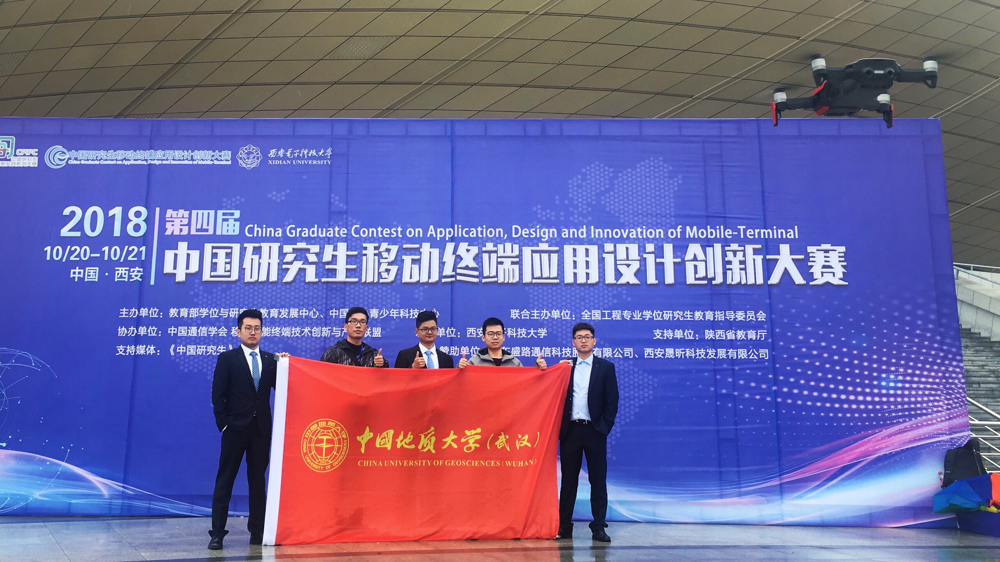
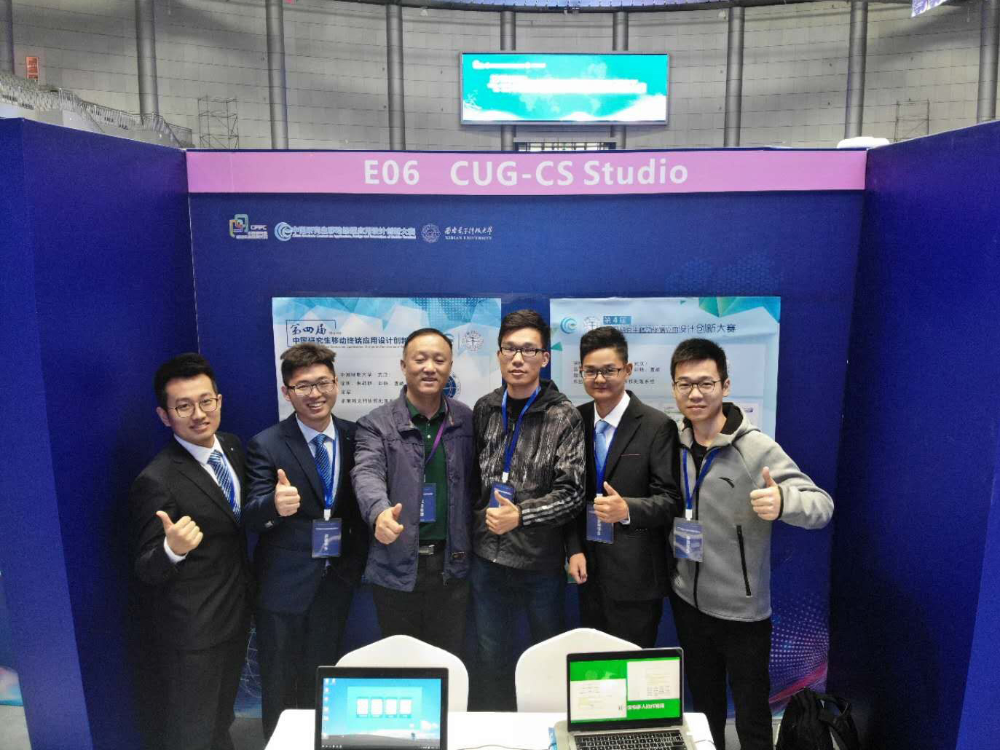
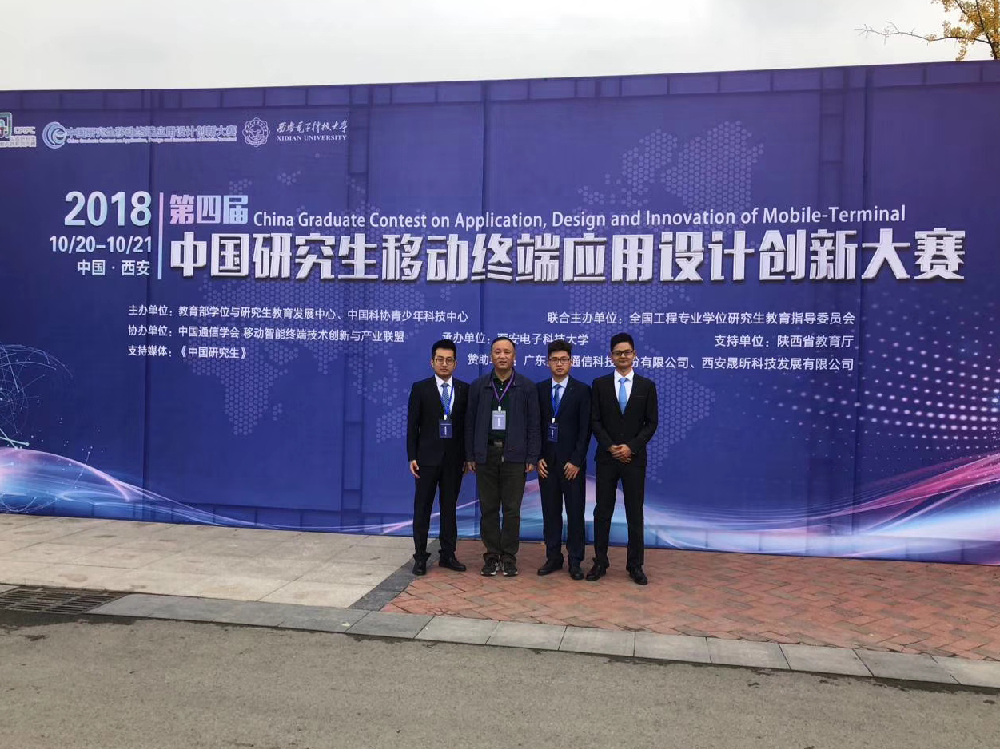

团队荣誉
-

领航答辩
领航项目的设立是为活跃我校科技活动氛围，鼓励学生开展具有探索性、挑战性的创新研究活动和国际学术交流活动，培养和锻炼我校学生的科学研究素养和能力。
-

领航答辩
领航项目在培养一批基础厚实、专业精深、兴趣浓厚、善于创新的高水平科研生力军，促进第二课堂在大学生健康成长中发挥更大的作用。
-

第四届移动终端大赛
第四届中国研究生移动终端应用设计创新大赛总决赛在西安电子科技大学举行。经过激烈的角逐，研究生徐衡、朱超群、彭艳、曹威、张坤组成的CUG_CS Studio团队（指导老师：宋军），晋级全国总决赛前八强并荣获一等奖。这也是我校研究生在这项赛事中取得的历史最好成绩。
-

第四届移动终端大赛
中国研究生移动终端应用设计创新大赛（英文名称：China Graduate Contest on Application, Design and Innovation of Mobile-Terminal）是“中国研究生创新实践系列大赛”主题赛事之一。
-

第四届移动终端大赛
中国研究生移动终端应用设计创新大赛由教育部学位与研究生教育发展中心、中国科协青少年科技中心联合全国工程专业学位研究生教育指导委员会主办，本届大赛有118所高校参加， 共提交621件作品，评出一等奖16个、二等奖48个、三等奖94个。
- <01/05>
- <02/05>
- <03/05>
- <04/05>
- <05/05>